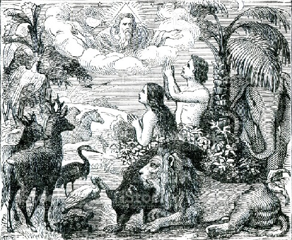
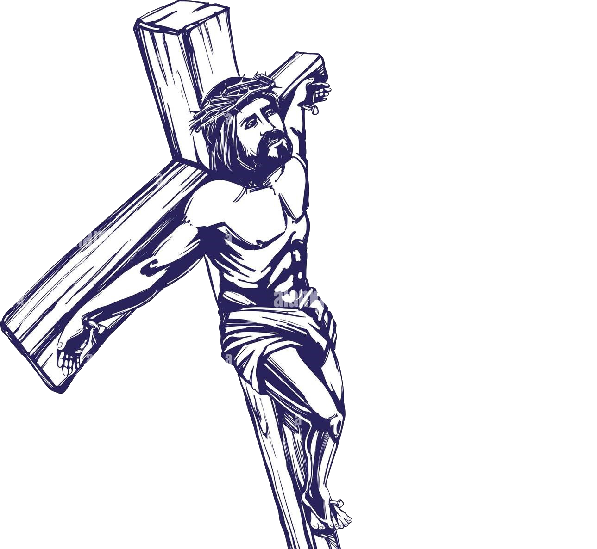

NHỮNG BƯỚC ĐẦU THEO CHÚA JESUS CHRIST
Chương trình của ĐỨC CHÚA TRỜI dành cho muôn vật trong cõi sáng tạo.
I. Chương trình cho loài người
Sáng thế kí 1:26-28
❏ ĐỨC CHÚA TRỜI phán rằng: Chúng ta hãy làm nên loài người như hình ta va theo tượng ta, đặng quản trị loài cá biển, loài chim trời, loài súc vật, loài côn trùng bò trên mặt đất, và khắp cả đất. ĐỨC CHÚA TRỜI dựng nên loài người như hình NGÀI; NGÀI dựng nên loài người như hình ĐỨC CHÚA TRỜI; NGÀI dựng nên người nam cùng người nữ. ĐỨC CHÚA TRỜI ban phước cho loài người và phán rằng: Hãy sanh sản thêm nhiều và làm đầy dẫy đất, hãy làm cho đất phục tùng; hãy quản trị loài cá biển, loài chim trời cùng các vật sống hành động trên mặt đất.
Từ ban đầu mục đích của ĐỨC CHÚA TRỜI tạo dựng nên loài người:
- Thứ nhất là giống NGÀI cả bên trong và bên ngoài, bên trong là đầy dẫy những tư duy, cảm xúc giống ĐỨC CHÚA TRỜI, bên ngoài hành động giống CHÚA xuất phát từ việc đầy dẫy CHÚA trong lòng mình.
- Thứ hai là quản trị mọi vật sống dưới đất, phục tùng đất sinh sản ra nhiều làm đầy dẫy đất.
▸ ĐỨC CHÚA TRỜI đặt để con người làm Ông Trời con dưới đất này. Nhưng tiếc thay loài người đã phạm tội đánh mất sự nhìn biết mục đích của ĐỨC CHÚA TRỜI cho mình
(Ghi chú: Chúng ta nên hiểu giống ở đây không phải theo cách mà Lucifer muốn trở thành ĐƯC CHÚA TRỜI thứ 2 mà là giống trong bản tính, tính cách, đức tính của ĐỨC CHÚA TRỜI )
▸ Loài người là mắc xích cực kì quan trọng để CHÚA JESUS có thể đến trong thế gian này để chứng tỏ sự công bằng của NGÀI cho tất cả cõi sáng tạo biết rằng ĐỨC CHÚA TRỜI cực kì công bình và luật pháp NGÀI được áp dụng trên tất cả tạo vật kể cả chính NGÀI.
I. Lịch sử nguyên tội.
 Ê-sai 14:12-15
Ê-sai 14:12-15
Hỡi sao mai, con trai của sáng sớm kia, sao ngươi từ trời sa xuống! Hỡi kẻ giày-đạp các nước kia, ngươi bị chặt xuống đất là thể nào! 13Ngươi vẫn bụng bảo dạ rằng: Ta sẽ lên trời, sẽ nhắc ngai ta lên trên các ngôi sao Đức Chúa Trời. Ta sẽ ngồi trên núi hội về cuối-cùng phương bắc. 14Ta sẽ lên trên cao những đám mây, làm ra mình bằng Đấng Rất-Cao. 15Nhưng ngươi phải xuống nơi Âm-phủ, sa vào nơi vực thẳm!
Trong kinh thánh đã cho ta biết trước thời điểm ban đầu của ĐỨC CHÚA TRỜI dựng nên loài người thì các Thiên sứ của NGÀI được tạo nên trước đó. Trong các thiên sứ đó có một Thiên sứ trưởng là Lucifer đã đứng lên phản loạn với CHÚA muốn nhấc ngội mình lên cao bằng CHÚA và vì nó bị phạt và đổi tên thành Satan là cha của kẻ nói dối và hồ lửa là nơi CHÚA tạo ra cho nó và các thiên sứ sa ngã đi theo nó. Từ đó mà tội lỗi đã xâm nhập vào trong Nước TRỜI vì vậy mà CHÚA đã tách các từng Trời ra và ném satan và thiên sứ theo nó xuống khỏi tầng Trời thứ nhất là nơi CHÚA và các Thiên sứ Thánh Ngài ở.
Sáng thế ký 3:1-19
❏ 14 Giê-hô-va Đức Chúa Trời bèn phán cùng rắn rằng: Vì mầy đã làm điều như vậy, mầy sẽ bị rủa sả trong vòng các loài súc vật, các loài thú đồng, mầy sẽ bò bằng bụng và ăn bụi đất trọn cả đời. 15 Ta sẽ làm cho mầy cùng người nữ, dòng dõi mầy cùng dòng dõi người nữ nghịch thù nhau. Người sẽ giày đạp đầu mầy, còn mầy sẽ cắn gót chân người. 16 Ngài phán cùng người nữ rằng: Ta sẽ thêm điều cực khổ bội phần trong cơn thai nghén; ngươi sẽ chịu đau đớn mỗi khi sanh con; sự dục vọng ngươi phải xu hướng về chồng, và chồng sẽ cai trị ngươi. 17 Ngài lại phán cùng A-đam rằng: Vì ngươi nghe theo lời vợ mà ăn trái cây ta đã dặn không nên ăn, vậy, đất sẽ bị rủa sả vì ngươi; trọn đời ngươi phải chịu khó nhọc mới có vật đất sanh ra mà ăn. 18 Đất sẽ sanh chông gai và cây tật lê, và ngươi sẽ ăn rau của đồng ruộng; 19 ngươi sẽ làm đổ mồ hôi trán mới có mà ăn, cho đến ngày nào ngươi trở về đất, là nơi mà có ngươi ra; vì ngươi là bụi, ngươi sẽ trở về bụi.

▸ Tổ tiên của chúng ta là Adam và Êva đã không vâng lời ĐỨC CHÚA TRỜI ăn trái cây biết điều thiện và điều ác dẫn đến việc mất đi sự vinh hiển mà ĐỨC CHÚA TRỜI cho họ nên họ đã cảm thấy mình lõa lồ, ĐỨC CHÚA TRỜI đã rủa sả A-dam và Ê-va vậy nên tất cả những người sinh ra từ A-dam và Ê-va đều bị rủa sả.
Rô ma 5:12
❏ Cho nên như bởi một người mà tội lỗi vào trong thế gian, lại bởi tội lỗi mà có sự chết, thì sự chết đã trải qua hết thảy mọi người như vậy, vì mọi người đều phạm tội…
▸ Loài người là dòng giống sa ngã, không một ai trong loài người là không phạm tội. Câu hỏi đặt ra là như vậy có bất công không khi tổ tiên chúng ta phạm tội thì chúng ta bị di truyền mòng mống tội lỗi đó và bị rủa sả. Trả lời cho câu hỏi này là trước nhất chúng ta chỉ là những tạo vật không phải ĐẤNG TẠO HÓA. NGÀI là ĐẤNG quản trị mọi điều và các nguyên tắc nhân quả. Điều may mắn nhất trong cuộc đời là chúng ta được sinh ra là con người là giống loài đẳng cấp chỉ dưới ĐỨC CHÚA TRỜI trên mọi tạo vật khác, Thiên sứ cũng chỉ là những Thần hầu việc chúng ta. Nên điều công bằng duy nhất chúng ta có thể làm trên đời sống mình là tiếp nhận sự thương xót, tha tội của ĐỨC CHÚA TRỜI thông qua CHÚA JESUS CHRIST
II. Tội lỗi là gì
I Giăng 3:4
❏Còn ai phạm tội là trái luật pháp; và sự tội lỗi là sự trái luật pháp.
▸Tội lỗi là không tuân thủ luật pháp của ĐỨC CHÚA TRỜI (là tội không hành động theo luật của CHÚA), hoặc vi phạm luật pháp của ĐỨC CHÚA TRỜI (là hành động sai với luật của NGÀI) .
▸Tội lỗi còn là sự trật định. Khi chúng ta làm gì đó trật đích mà ĐỨC CHÚA TRỜI đã định thì đó là tội lỗi.
▸Một Cơ Đôc nhân phải có đời sống chống lại tội lội, chống lại điều ác, chống lại công việc ma quỉ, chống lấy Babylon(Nhân linh của con người liên mình với ma quỉ).
Sự cứu rỗi
I.Sự cứu rỗi bởi ân điển qua đức tin
Giăng 3:16
Vì ĐỨC CHÚA TRỜI yêu thương thế gian đến nỗi đã ban con một của NGÀI, hầu cho hễ ai tin con ấy không bị hư mất mà được sự sống đời đời
Tình yêu của ĐỨC CHÚA TRỜI bày tỏ qua CHÚA JESUS CHRIST để mở rộng cửa Thiên Đàng cho tất cả mọi người cho những ai tin nhận NGÀI. Dù loài người đã phạm tội và hậu quả của nó là sự chết. Nhưng CHÚA không muốn cứ như vậy mà loài người chết mất NGÀI đã có kế hoạch dành sẵn cho quyết định sa ngã của loài người.
Sự cứu rỗi bởi ân điên qua đức tin. Khi chúng ta tin vào CHÚA JESUS CHIRST chịu ăn năn, tan vỡ thật lòng và tiếp nhận CHÚA JESUS CHRIST là CHÚA là ĐẤNG CỨU CHUỘC. Khi đó ta sẽ nhận được sự cứu rỗi, chúng ta sẽ được tái sinh ở nơi chí cao trong tâm linh và bắt đầu một đời sống mới một đời sống để CHÚA làm CHỦ và chúng ta phải giữ được niềm tin này cho đến cuối cùng khi chúng ta còn ở trên đất.

Rô-ma 10:9-10
Vậy nếu miệng ngươi xưng Đức Chúa Jêsus ra và lòng ngươi tin rằng Đức Chúa Trời đã khiến Ngài từ kẻ chết sống lại, thì ngươi sẽ được cứu; 10 vì tin bởi trong lòng mà được sự công bình, còn bởi miệng làm chứng mà được sự cứu rỗi.
Sự cứu rỗi là món quà CHÚA ban cho loài người nhưng chịu nhận lấy món quà đó không là quyết định của mỗi cá nhân. Qua sự cứu rỗi chúng ta được tha tội được sinh lại với con người mới được ĐẤNG CHRIST làm chủ nhờ đó chúng ta phục hội lại vị trí ban đầu mà CHÚA ban cho loài người là giống CHÚA và cai trị muôn vật NGÀI tạo nên.
II.Sự cứu rỗi có bị mất hay không
Có.Bất cứ ai cứ chai lỳ trong tội lỗi, khinh lờn sự nhịn nhục của ĐỨC CHÚA TRỜI, sự cáu trách của ĐỨC THÁNH LINH không ăn năn vì tội lỗi mình đã mắc phải và điều quan trọng người đó không có đời sống trưởng thành, có kết quả trong NGÀI thì sẽ bị ĐỨC CHÚA TRỜI chặt lìa khỏi NGÀI . Nên hãy có lòng trong sạch trước CHÚA biết rằng NGÀI là ĐẤNG mà cả sự sống chúng ta dựa vào, ĐỨC CHÚA TRỜI đáng kính sợ như thế nào.
Giăng 15:1-2
1 Ta là gốc nho thật, Cha ta là người trồng nho. 2 Hễ nhánh nào trong ta mà không kết quả thì Ngài chặt hết; và Ngài tỉa sửa những nhánh nào kết quả, để được sai trái hơn.
Ê-phê-sô 4:30
Anh em chớ làm buồn cho Đức Thánh-Linh của Đức Chúa Trời, vì nhờ Ngài anh em được ấn-chứng đến ngày cứu-chuộc.
Rô ma 11: 19-22.
Ngươi sẽ nói rằng: Các nhánh đã bị cắt đi, để ta được tháp vào chỗ nó. 20 Phải lắm; các nhánh đó đã bị cắt bởi cớ chẳng tin, và ngươi nhờ đức tin mà còn; chớ kiêu ngạo, hãy sợ hãi. 21 Vì nếu Đức Chúa Trời chẳng tiếc các nhánh nguyên, thì Ngài cũng chẳng tiếc ngươi nữa. 22 Vậy hãy xem sự nhân từ và sự nghiêm nhặt của Đức Chúa Trời: sự nghiêm nhặt đối với họ là kẻ đã ngã xuống, còn sự nhân từ đối với ngươi, miễn là ngươi cầm giữ mình trong sự nhân từ Ngài: bằng chẳng, ngươi cũng sẽ bị chặt.
Đức tin
I.Định nghĩa đức tin
Đức tin là thực hiện điều ĐỨC CHÚA TRỜI trong mong qua mình và trong mình.
Rô ma 10:17
Như vậy, đức-tin đến bởi sự người ta nghe, mà người ta nghe, là khi lời của Đấng Christ được rao-giảng
Rô ma 10:17
Vả, đức-tin là sự biết chắc vững-vàng của những điều mình đương trông mong, là bằng-cớ của những điều mình chẳng xem thấy
Gia-cơ 2:26
Vả, xác chẳng có hồn thì chết, đức-tin không có việc làm cũng chết như vậy.
Từ các phân đoạn Kinh Thánh trên ta biết được đức tin đến từ ĐỨC CHÚA TRỜI chứ không phải đến từ mong muốn riêng hay tưởng tượng của chúng ta. Đức tin là những điều mà chúng ta chưa xem thấy nhưng biết chắc vững vàng đó là điều đã có và chúng ta phải hành động, thực hiện để ngày càng gần đến điều đó. Còn nếu không hành động thì Kinh Thánh nói rõ nó không mang lại một chút lợi ích gì cho chúng ta.
II.Cấp độ đức tin
Đức tin cứu rỗi.
Đức tin trong trật tự thẩm quyền.
Đức tin con ĐỨC CHÚA TRỜI.
Cầu nguyện
I.Định nghĩa
Cầu nguyện là đem ý muốn của ĐỨC CHÚA TRỜI xuống đất.
Sáng thế kí 4:26
Sết cũng sanh được một con trai, đặt tên là Ê-nót. Từ đây, người ta bắt đầu cầu khẩn danh ĐỨC GIÊ HÔ VA.
Cầu nguyện không phải là câu thần chú để cầu xin ĐỨC CHÚA TRỜI ban cho chúng ta điều gì đó theo ý riêng của mình. Cầu nguyện là hơi thở thuộc linh để khiến cho người tâm linh bên trong chúng ta được trưởng thành, cầu nguyện là một trong những cách thức để tương giao với ĐỨC CHÚA TRỜI. Khi cầu nguyện chúng ta bắt đầu mở ra một kênh để chuyển giao thông tin từ TRỜI xuống đất. Chúng ta nhận lấy ý muốn của ĐỨC CHÚA TRỜI và đem ý muốn đó thực hiện trên đất này. Tương tự như chúng ta trở thành ống dẫn để khiến cho không khí Nước TRỜI được đem xuống trên đất này. Việc thường xuyên cầu nguyện bày tỏ một Cơ Đốc nhân biết đầu phục hoàn toàn vào CHÚA
Hội Thánh
Thánh Linh